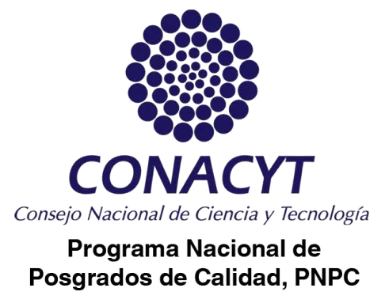
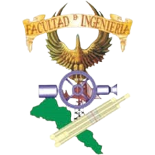

Posgrado en Ingeniería
de la Construcción
"Construye tu conocimiento, diseña tu futuro."
Universidad Autónoma de Sinaloa. Programas de excelencia académica con reconocimiento nacional.
Nuestra Oferta
Bienvenidos al Posgrado en
Bienvenidos al Posgrado en
Ingeniería de la Construcción
Descubre los grandes beneficios de estudiar en nuestros programas de Maestría y Doctorado. Formamos investigadores y profesionales de alto nivel capaces de transformar la industria mediante la innovación y el rigor científico.

¿Por qué estudiar con nosotros?

Networking Profesional

Reconocimiento Oficial
Posibilidad de Becas
Excelencia Académica
Programas integrados al Sistema Nacional de Posgrados (SNP) de la SECIHTI.
